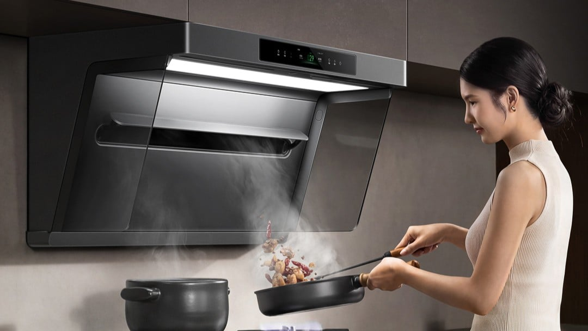
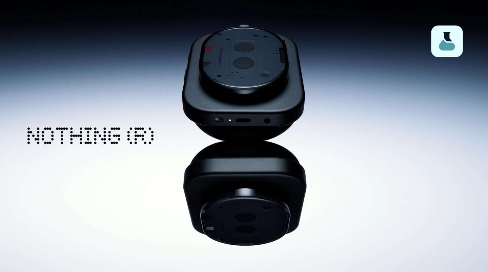
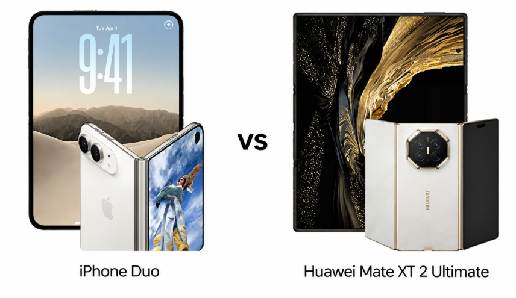

THE TECH EDIT
기술의 변화, 매일 한눈에.
카메라 · 스마트폰 · AI, 해외 테크 소식을 모아 전합니다.
최근 발행2026-09-13
새로 들어온 소식
LATEST STORIES최신 뉴스
전체 2,922개 기사Pixel 11 Pro XL 대 OPPO Find X9 Pro: 배터리, 카메라, 성능 비교

Nothing Headphone (1) Pro, 9월 29일 xMEMS 포함 3개 드라이버 구성으로 출시 예정
라오와, AF 35mm F2.8 1X APO 매크로 렌즈 출시, 출시가 2,688위안
국내 폴더블 디스플레이, Apple iPhone Duo 개폐 투명 애니메이션 학습, 폴더 생성 완료 소식

아이폰 듀오 vs 화웨이 메이트 XT 2 얼티밋: 애플 vs 가장 파격적인 폴더블 스마트폰
아이폰 듀오 vs 갤럭시 Z 폴드 8 울트라: 어떤 스마트폰을 사야 할까?
Apple 최초의 폴더블 스마트폰 iPhone Duo, 분할 화면 비율 조절 불가, 외부 화면에 맞춰 조정될 수도
Huawei Pura X Max 폴더블 스마트폰 '보르도 레드', '니스 블루' 색상 첫 판매, 11,999위안부터
19,999위안부터: Huawei Mate XT 2 비범대사 3단 폴더블 스마트폰 첫 판매, Kirin 9050 Pro 칩 최초 탑재, 하드웨어급 프라이버시 보호 기능 최초 적용
Honor "매직 매거진" 사건 진행 상황: 제3자 기관, 사건 당시 스마트폰으로 10회 정상 통화 확인
구글 픽셀 11 프로 vs 오포 파인드 X9 프로: 어떤 스마트폰이 더 가치 있을까?
배달 음식 신규 규정 시행 3개월, CCTV 조사 결과 직원이 맨손으로 구운 닭을 잡고, 오픈 키친 카메라는 천장을 향하고 있는 것으로 드러나
Counterpoint 예측: 2026-2030년 폴더블 디스플레이 스마트폰 패널 출하량 74% 증가
Apple 공식 웹사이트 Apple Store 점검, iPhone 18 Pro 시리즈 오늘 밤 사전 예약 시작
Apple, iPhone 18 Pro 시리즈 스마트폰 수리 예상 비용 공개: 배터리 서비스 1048위안, 전작 대비 79위안 인상
Apple iPhone 18 Pro 시리즈 사전 예약 시작: 가변 조리개 추가, 최초 2nm A20 Pro 칩 탑재, 9999위안부터
Honor DigaCite AI 앨범 관리자 출시: 11인치 풀 HD 패널, AI 창작 기능 내장, 999위안
Xiaomi 미지아 그래핀 온풍기 C 사전 판매: 80° 광각 스윙 송풍, 2000W 출력, 정부 보조금 적용가 199위안
vivo X500 Pro Max 스마트폰 4가지 색상 공개, 9월 21일 출시
TSMC 1.4nm 반도체 공장, 약 1년 앞당겨 2027년 4월 시범 생산 예정
T-Mobile, iOS 27 '듀얼 SIM 원 넘버' 기능 아이폰 핸드오프에 월 5달러 부과 예정
검색 결과가 없습니다
다른 검색어를 입력하거나 필터를 초기화해 보세요.